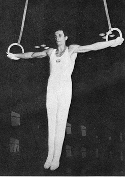

Georgi Adamov (BUL)
1965 and 1967 European V Silver Medalist

Competition Results
1965
BUL Championships: 1st AA
European Championships: 15th AA, 2nd V
1967
European Championships: 17th AA, 2nd V
1968
Olympic Games: 11th Team, 58th AA
1969
European Championships: 23rd AA
1971
USA-BUL Dual Meet: 2nd Team,
This page was created on November
05, 2006.
© Gymn Forum